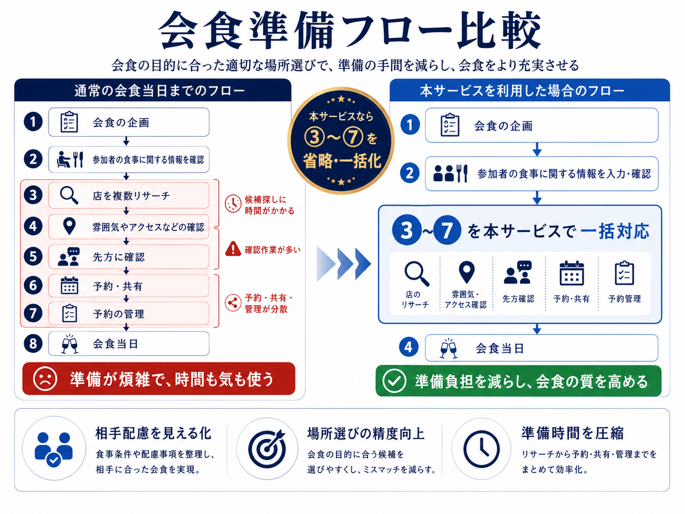

よくある悩み
- 相手のアレルギーや好き嫌いが分からない
- お酒を飲むか、個室が必要か判断しづらい
- 雰囲気・アクセス・目的のバランスが難しい
- 確認や予約のやり取りが増えて手間になる
会食準備の手間を、価値に変える
相手の食の好みやNG、会食の目的、雰囲気、アクセス条件などを整理し、 会食にふさわしい場所選びから確認・予約・共有までを一括でサポート。 準備の負担を減らしながら、会食の質を高めます。
職種・ステータス、アレルギー、好き嫌い、お酒、座席形式、宗教的配慮などを整理。
会食の目的に応じて、相手に合う場所を選びやすくし、ミスマッチを減らします。
先方確認、予約・共有、管理まで分散しがちな作業をまとめて効率化。
Problem
問題は、会食をする際の事前準備に時間がかかること。特に、相手側の食の好みやNG関連を聞くことに手間が多く、 相手の食事に関する情報が不透明なまま進んでしまう点が、準備を複雑にしています。
会食の目的に合った適切な場所選びを実現し、会食をより充実させる。
ただ店を探すのではなく、相手への配慮と会食の目的に沿って、より良い場をつくるためのサービスです。
Comparison
通常の会食では、店のリサーチ、雰囲気やアクセスの確認、先方確認、予約・共有、予約管理まで、 ③〜⑦の工程が分散しがちです。本サービスでは、この部分をまとめて一括対応できます。

Features
食事条件や配慮事項を整理し、相手に合った会食を実現します。
会食の目的に合う候補を選びやすくし、ミスマッチを減らします。
リサーチから予約・共有・管理までをまとめて効率化します。
How it works
会食の目的や参加者を整理します。
職種・ステータスと食事に関する情報をまとめて整理します。
店のリサーチ、雰囲気・アクセス確認、先方確認、予約・共有、予約管理までをまとめて進行します。
準備負担を減らし、会食そのものに集中できます。
FAQ
職種・ステータスに加え、アレルギー、好き嫌い、お酒、座席形式、宗教的配慮など、会食に必要な情報を整理します。
通常フローの③店の複数リサーチ、④雰囲気やアクセス確認、⑤先方確認、⑥予約・共有、⑦予約管理を一括で進めやすくします。
はい。フリー版では3回まで使用可能です。使用感を確認した上で、ProまたはEnterpriseへの移行をご検討いただけます。